Linear Classification
以直線當作分界線。
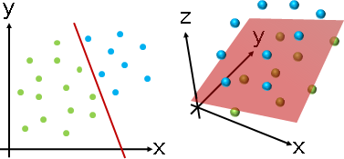
數據的維度可以推廣到三維以上，此時分界線就成了分界面、分界體等等。分界物是數據維度減少一維（hyperplane）。
雖然可以視作計算幾何問題，但是當維度太高的時候，計算相當複雜，難以快速求得精確解。因此採用了數值方法的套路。
演算法（Perceptron）
不考慮分界線到數據的距離。分界線只要分開數據即可。
分界線是一條直線ax+by+c=0。想判斷一筆數據(x₁,y₁)位於分界線的哪一側，就將(x₁,y₁)代入到直線方程式，計算ax₁+by₁+c，如果大於零就是在正側，小於零就是在反側，等於零就是在分界線上。
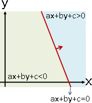
每一筆數據都代入計算，不見得都能正確分類。我們必須調整分界線的位置，也就是調整a b c三個參數。該如何調整才好呢？我們可以利用最佳化的思維。
設定誤差是「正確結果、分類結果不相符的數據筆數」，誤差越小越好。為了方便統計誤差，將結果定為數值0和1。正確結果：數據共兩類，第一類數據定為0，第二類數據定為1。分類結果：數據在線上、在反側定為0，數據在正側定為1。
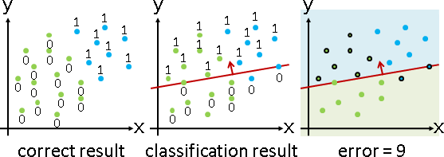
如此一來，統計誤差，只需數值運算、無需邏輯運算。正確結果和分類結果先相減再平方，等於0即相符，等於1即不相符。
0和1顛倒設定也沒關係，a b c的計算結果多了負號而已。
N 2
∑ [gᵢ - u(axᵢ+byᵢ+c)]
i=1
gᵢ : correct result of data i (0 or 1)
u(axᵢ+byᵢ+c): classified result of data i (0 or 1)
u : unit step function (0 or 1)
最佳化演算法採用Gradient Descent：往梯度最陡的方向逐步移動。首先推導梯度，也就是分別對a b c三個變數進行偏微分：
∂ N 2
―― ∑ [gᵢ - u(axᵢ+byᵢ+c)] = ∑ [gᵢ - u(axᵢ+byᵢ+c)] ⋅ -2xᵢ
∂a i=1
= ∑ errorᵢ ⋅ -2xᵢ
∂ N 2
―― ∑ [gᵢ - u(axᵢ+byᵢ+c)] = ∑ [gᵢ - u(axᵢ+byᵢ+c)] ⋅ -2yᵢ
∂b i=1
= ∑ errorᵢ ⋅ -2yᵢ
∂ N 2
―― ∑ [gᵢ - u(axᵢ+byᵢ+c)] = ∑ [gᵢ - u(axᵢ+byᵢ+c)] ⋅ -2
∂c i=1
= ∑ errorᵢ ⋅ -2
一開始a b c設定成任意值。a b c不斷往梯度最陡的方向移動一段距離，朝最小值前進：
[ 0 ]
w0 = [ 0 ] 一開始a b c設定成任意值
[ 0 ]
[ ∑ errorᵢ ⋅ -2xᵢ ] [ ∑ errorᵢ ⋅ xᵢ ]
wt+1 = wt - rate [ ∑ errorᵢ ⋅ -2yᵢ ] = wt + 2 rate [ ∑ errorᵢ ⋅ yᵢ ]
[ ∑ errorᵢ ⋅ -2 ] [ ∑ errorᵢ ]
通常會把2併入rate。或者一開始設定誤差函數多乘一個1/2，來把2消掉。
推廣成online演算法，依序處理每一筆數據，一次一筆。
[ errorᵢ ⋅ xᵢ ]
wt+1 = wt + 2 rate [ errorᵢ ⋅ yᵢ ]
[ errorᵢ ]
通常會把2併入rate。或者一開始設定誤差函數多乘一個1/2，來把2消掉。
公式非常簡潔！這就是為什麼使用這種誤差設定方式、使用Gradient Descent的原因。這是前人努力試驗出來的最簡潔的方式。
當數據可分為兩半，則誤差呈單峰函數，Gradient Descent不會卡在區域極值。證明方式是逐次加入一筆數據。【尚待確認】
換句話說，當數據可分為兩半，而且rate適中（太小導致攤在山腰、太大導致越過山頂），則此演算法一定可以找到正確的分界線。當數據不可分為兩半，則此演算法毫無用武之地。
「一筆數據代入直線方程式」這件事，通常畫成理工味道十足的圖。這個東西有個古怪名稱叫做perceptron：
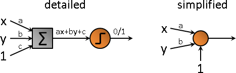
所有輸入乘上權重、相加起來，經過unit step function，最後輸出0或1（也有人輸出+1或-1）。
函數不一定得是unit step function。有些時候需要輸出實數，就可以改成sigmoid function。
UVa 11289 ICPC 3581
演算法（Support Vector Machine）
考慮分界線到數據的距離。分界線位於正中央，兩類數據相隔越遠越好。準確來說，分界線到兩類數據的最短距離均等、最短距離越大越好。
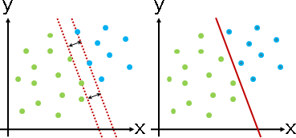
舉例來說，二維的情況下，兩類數據各自求凸包，分界線是凸包之間最近點對的中垂線，或者分界線平行於凸包上某一條邊。
但是當維度太高的時候，難以計算凸包、中垂超平面。只好採用數值方法的套路。
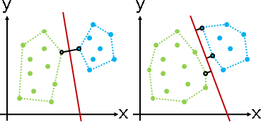
分界線是一條直線ax+by+c=0。想計算一筆數據(x₁,y₁)到分界線的距離，就將(x₁,y₁)代入到點與直線距離公式，計算(ax₁+by₁+c) / sqrt(a²+b²)。距離有正負號，如果大於零就是在正側，小於零就是在反側，等於零就是在分界線上。
間距線是兩條直線ax+by+c=1和ax+by+c=-1（已將截距縮放為1）。想計算間距線到分界線的距離，就將間距線上任意一點代入到點與直線距離公式（顯然分子是1和-1）。如此便得到半個間距。
每一筆數據到分界線的距離，都必須大於等於半個間距。而且每一筆數據都要選對邊。
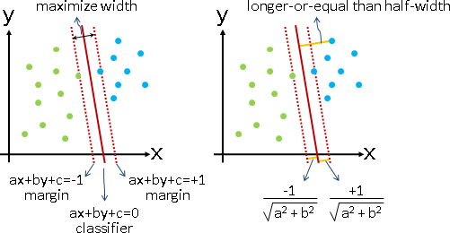
當數據可以分成兩半，採用regularization：最大化間距，限制是全部數據都分對。
為了方便判斷距離，數據標記為-1和+1（本應是0和1）。為了避免除以零，改為最小化間距的倒數（本應是負數）。為了方便最佳化，再取平方變成凸函數。
針對此誤差式子的最佳化演算法是Sequential Minimal Optimization，請讀者自行查詢。
https://www.csie.ntu.edu.tw/~cjlin/libsvm/
s
classifer: px+qy+r=0 margin: px+qy+r=±s half-width: ―――――――――――
sqrt(p²+q²)
let a = p/s, b = q/s, c = r/s, remove variable s.
1
classifer: ax+by+c=0 margin: ax+by+c=±1 half-width: ―――――――――――
sqrt(a²+b²)
1 axᵢ+byᵢ+c 1
max ――――――――――― subject to { ――――――――――― ≥ ――――――――――― ⋅ gᵢ } for all i
sqrt(a²+b²) sqrt(a²+b²) sqrt(a²+b²)
1
max ――――――――――― subject to { axᵢ+byᵢ+c ≥ gᵢ } for all i
sqrt(a²+b²)
min sqrt(a²+b²) subject to { axᵢ+byᵢ+c ≥ gᵢ } for all i
min (a²+b²) subject to { axᵢ+byᵢ+c ≥ gᵢ } for all i
min (a²+b²) + ∑ αᵢ [ (axᵢ+byᵢ+c) - gᵢ ] (αᵢ ≥ 0)
當數據不能分成兩半，採用scalarization：最大化間距，最小化分錯的數據數量。記得調整成凸函數。不過沒人這樣做。
1
max ――――――――――― , min ∑ [ axᵢ+byᵢ+c < gᵢ ]
sqrt(a²+b²)
min α (a²+b²) + β ∑ [u(gᵢ - (axᵢ+byᵢ+c))]² (α ≥ 0, β ≥ 0)
有人刪去unit step函數，把β設定成1，稱做Least Squares Support Vector Machine。有點莫名其妙。
min α (a²+b²) + β ∑ [gᵢ - (axᵢ+byᵢ+c)]² (α ≥ 0, β = 1)
Inlier / Outlier
真實世界的數據並非完美，常有例外。
無彈性的定義：全部數據分為inlier和outlier；inlier是分對的數據，outlier 是分錯的數據。
有彈性的定義：全部數據分為inlier和outlier；inlier是距離分界線太近的數據、以及分對的數據，outlier是距離分界線太遠又分錯的數據。
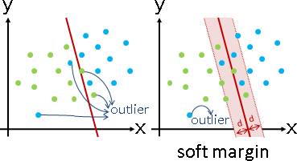
順帶一提，當數據無法分兩半，常見的手法是：無視彈性範圍內的數據，並且限制其數量上限。可以透過regularization處理。
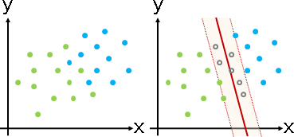
演算法（AdaBoost）（Adaptive Boosting）
實施分類演算法，分錯的數據，複製並增加其數量，再繼續實施分類演算法。這使得誤差大幅增加，使得分界線大幅靠近分錯的數據，進而迅速減少分錯的數據。
增加倍率：分對的數量除以分錯的數量。數量不必是整數。
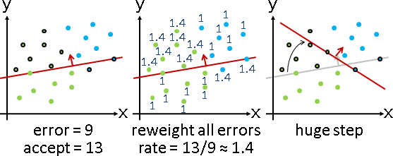
AdaBoost好處多多。分類過程中，分界線的移動步伐變大了，提早找到正確分界線。分類結束後，每筆數據的數量，可以看成是出錯程度，可依此判斷outlier。分類結束後，如果數據無法正確分兩半，就以每回合的分界線的平均，推定是最理想的分界線。
AdaBoost儘管缺乏理論根據，儘管名字怪異，卻非常實用。
演算法（Gradient Boosting）
實施分類演算法，得到分界線。然後不斷微調分界線。
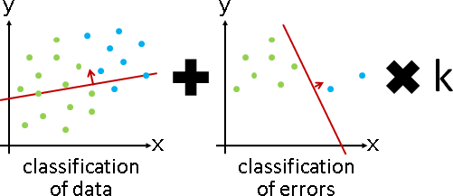
挑出分錯的數據，另外實施分類演算法，得到微調用的分界線。當前分界線，加上微調用的分界線，完成一次微調。重複這些步驟，直到分錯的數據足夠少，或者是誤差總和足夠小。
微調用的分界線，可以乘上倍率。注意到倍率太大就不是微調了，而倍率太小就失去調整效果了。
概念宛如Gradient Descent，故取名Gradient。概念宛如Adaptive Boosting，故取名Boosting。